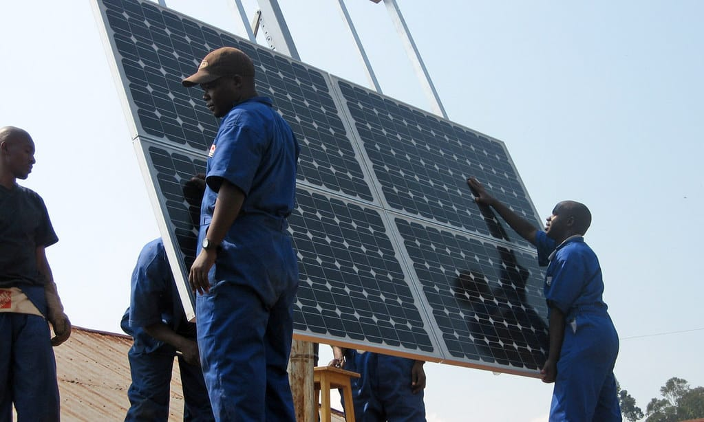
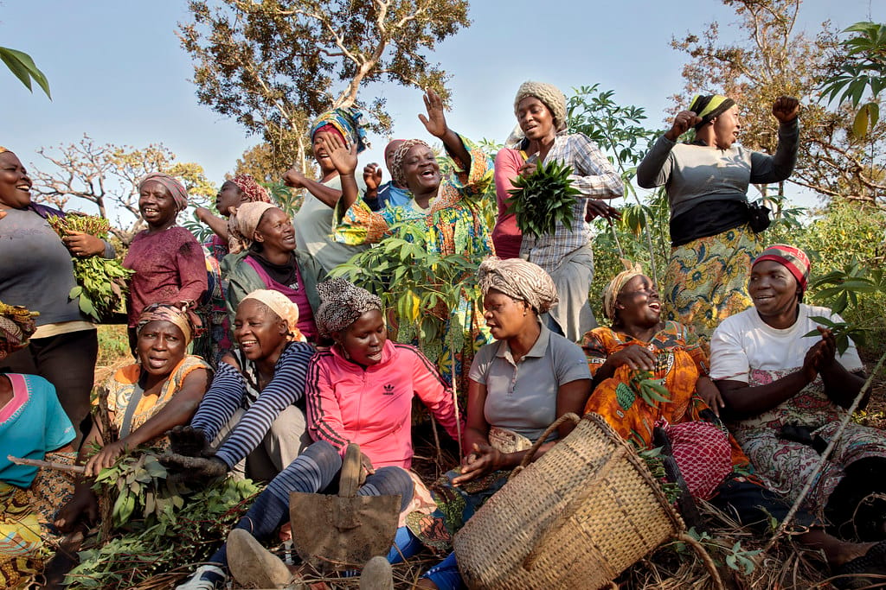

StarTimes
Telecommunications
Supported StarTimes' launching of solar inverters around Africa
- Go-to-Market Strategy and distribution
- Setting up across Africa
- Team training
Proof of Work
A track record of measurable impact — partnering with companies across energy, technology, carbon markets, and inclusive innovation to deliver transformative results.
Telecommunications
Supported StarTimes' launching of solar inverters around Africa

Off-Grid Solar Energy
Business Developer Consultant at Bboxx, a leading off-grid solar energy company.

Community Empowerment & Local Solutions
Worked as a Fractional Growth Consultant with SaWa clean water solutions

Carbon Markets & Climate Finance
Fractional Growth Consultant for Verst Carbon a carbon markets technology enabler and project developer that scales climate finance and generates green jobs across Africa.
Insurtech
Worked for 2 years as an in-house business developer at Inclusivity an Insurtech company.
Business Development & Market Expansion
Supported ITM Africa Consultancy with business development across East African markets, reviewing commercial models and identifying strategic partnership opportunities.
This portfolio is continually growing. Additional case studies and companies will be added here — reach out to learn more about our full body of work.
Request Full PortfolioLet's discuss how LynchPin Advisory can drive impact for your business or program.
Explore Our Services